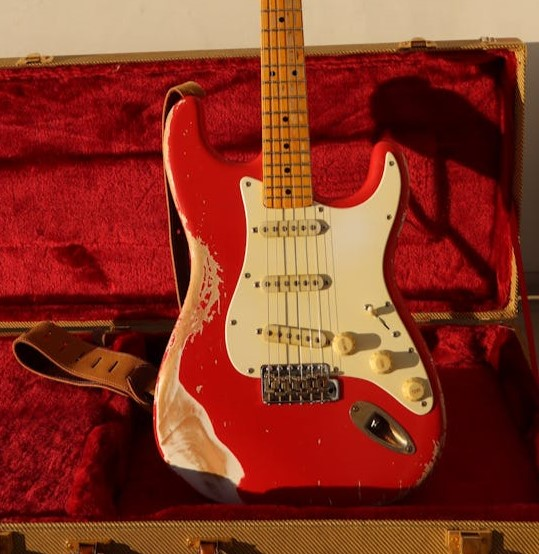
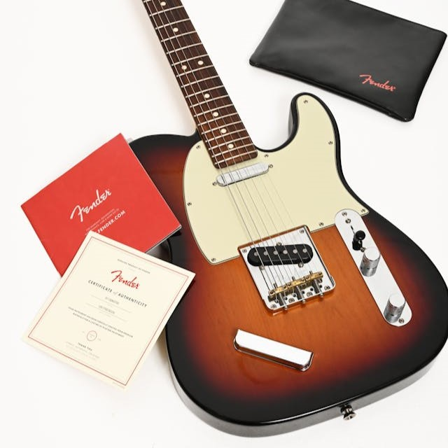
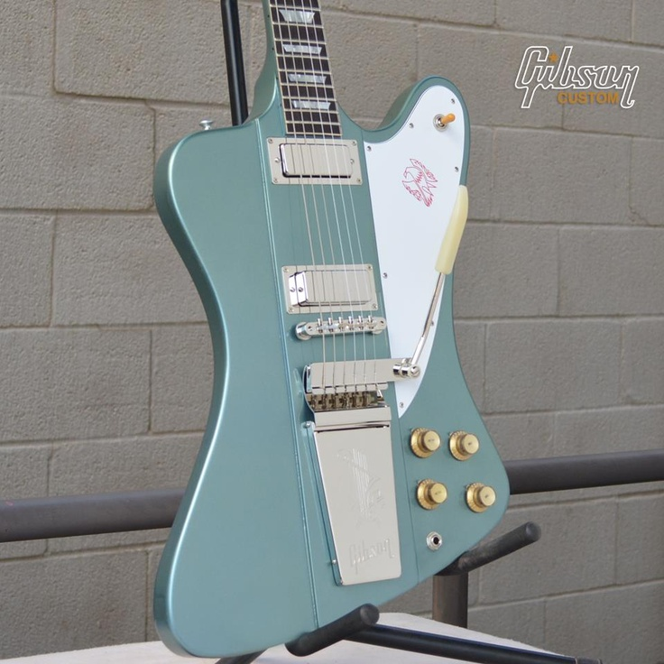

Modelos

Les paul

Stratocaster

Telecaster



A guitarra é um instrumento musical que se origina de modificações do violão na primeira metade do século XX. Em 1920 com a invenção dos microfones de bobinas móveis (captadores) surgiu o primeiro protótipo de uma guitarra. Um engenheiro elétrico, Lloyd Loar que trabalha na fabricante de instrumento Gibson, foi o responsável pela primeira guitarra.
Os primeiros modelos causaram muitos transtornos por cada do efeito que os captadores causavam nas caixas acústicas dos instrumentos. Para solucionar o problema um famoso músico estadunidense, Les Paul, criou o corpo de madeira maciço para a guitarra em 1930. Porém foi Leo Fender que produziu em massa e popularizou a guitarra em 1931.
Foi em 1950, depois da Segunda Guerra Mundial, que as guitarras começaram a ficar populares no mundo inteiro. Com o surgimento e a evolução do Rock começaram a surgir guitarristas famosos e conhecidos, o que ajudou na popularização do instrumento pelo mundo.